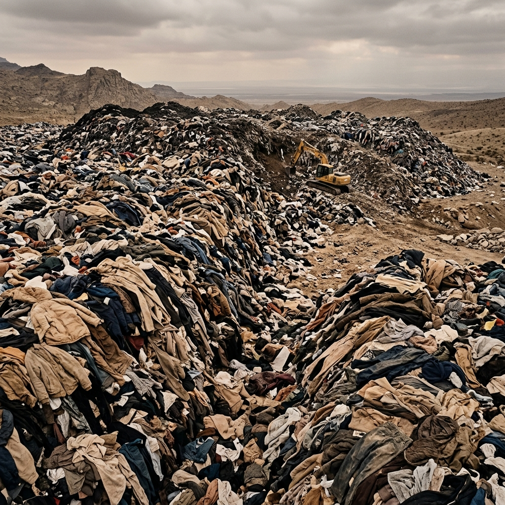
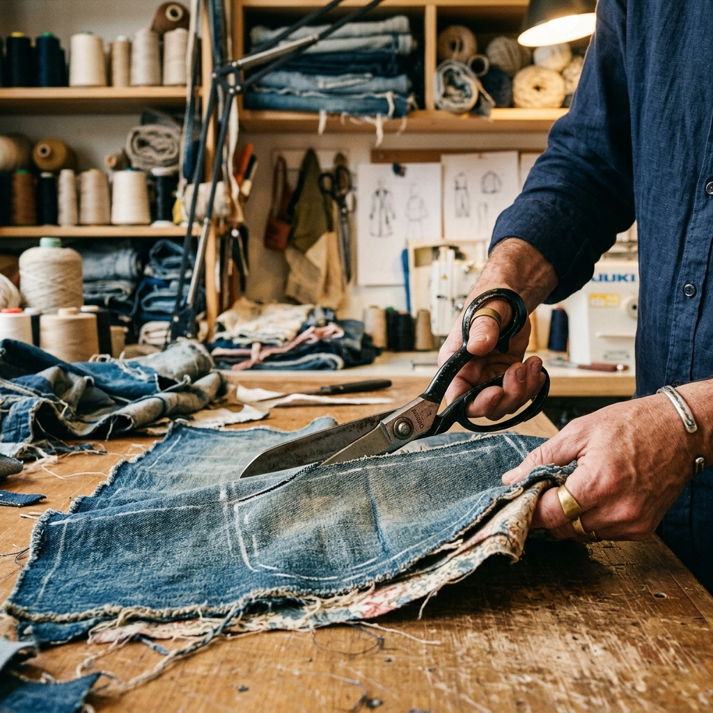
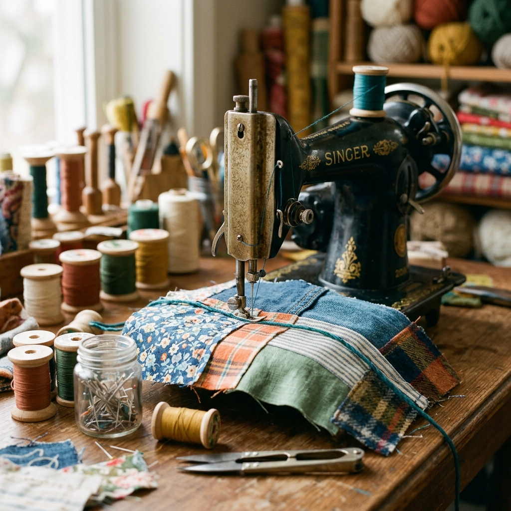
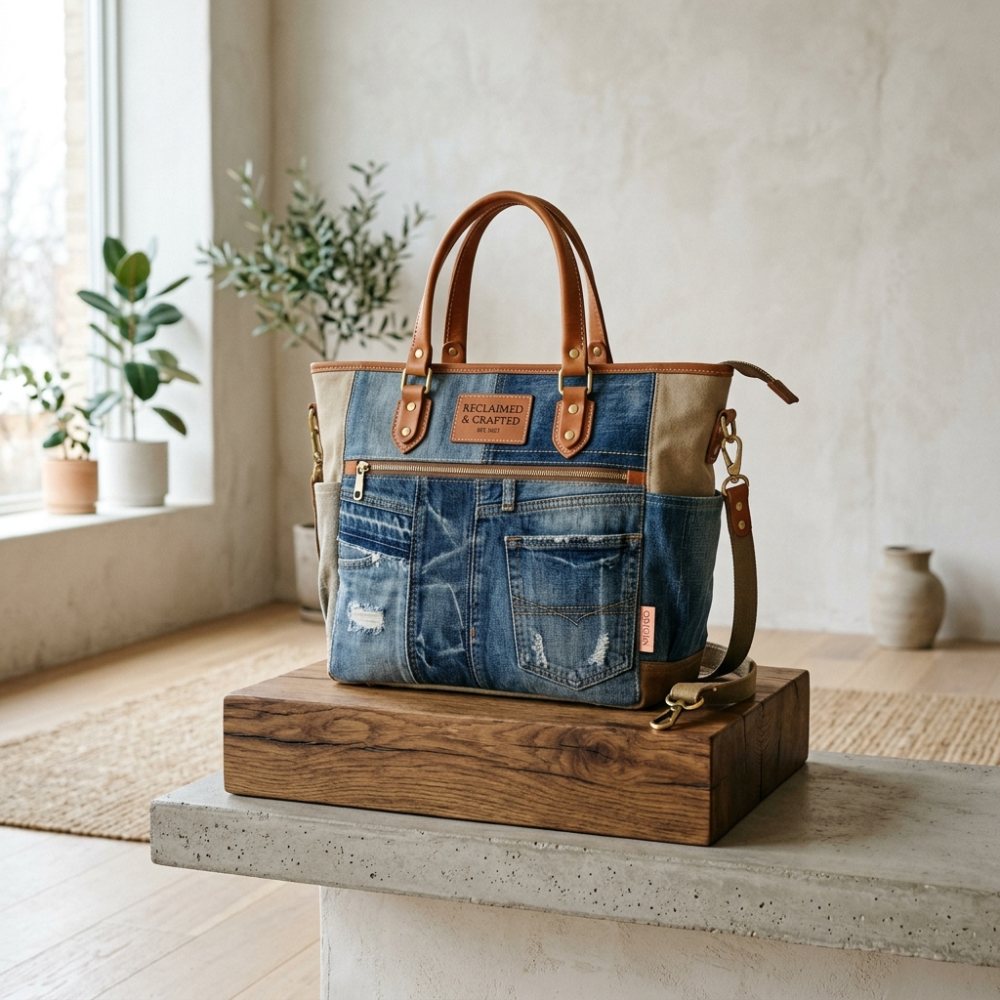
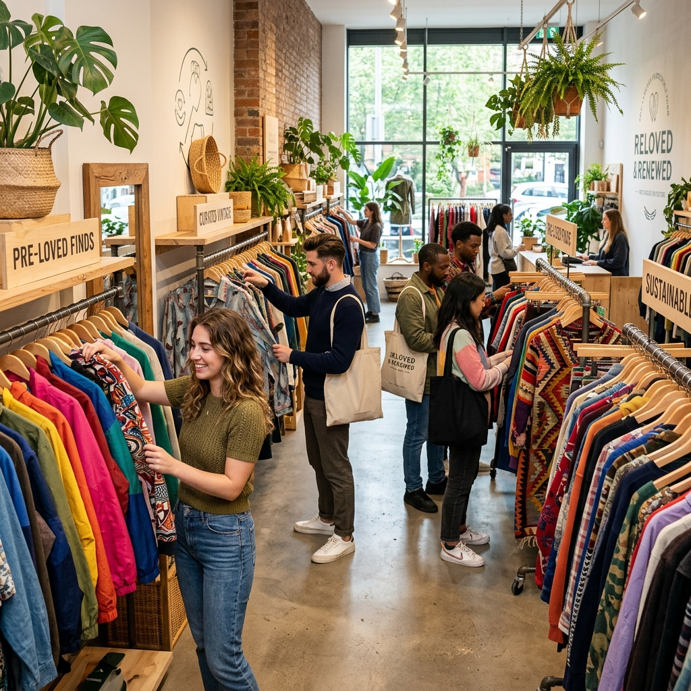
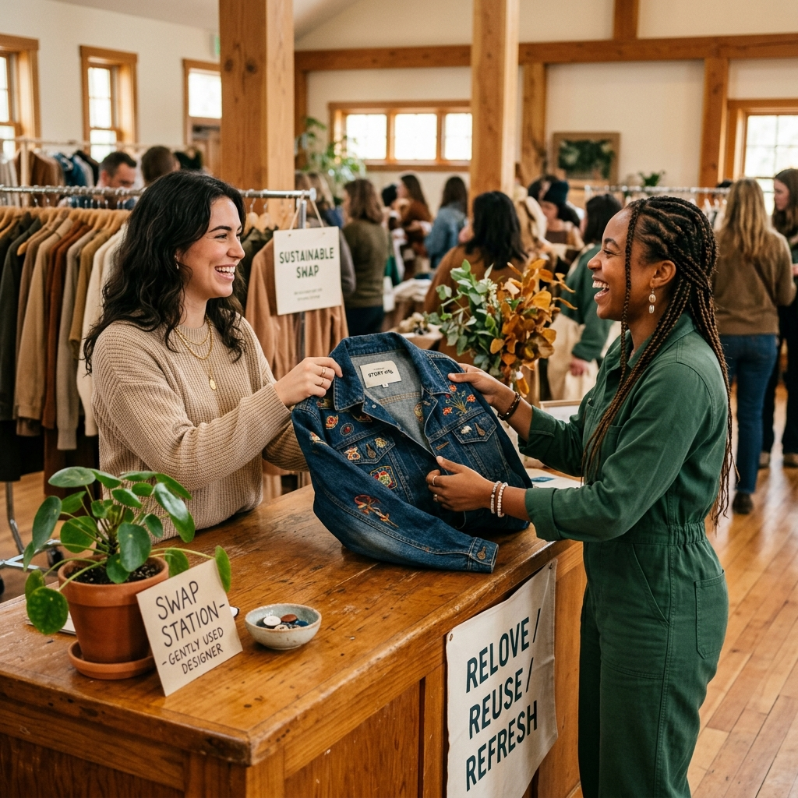
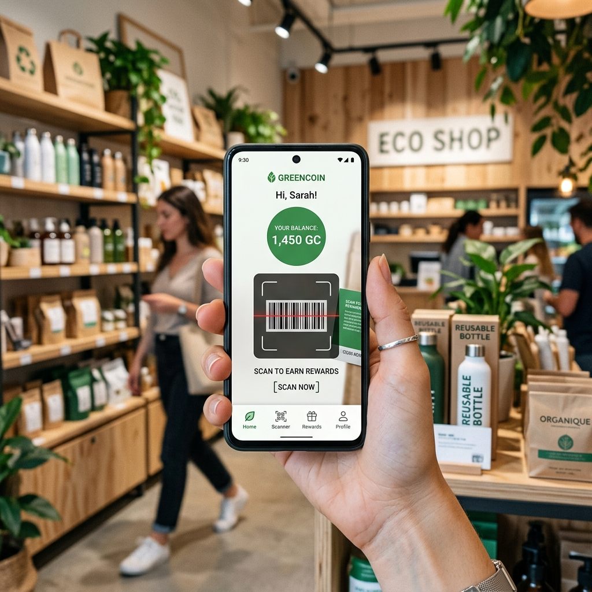
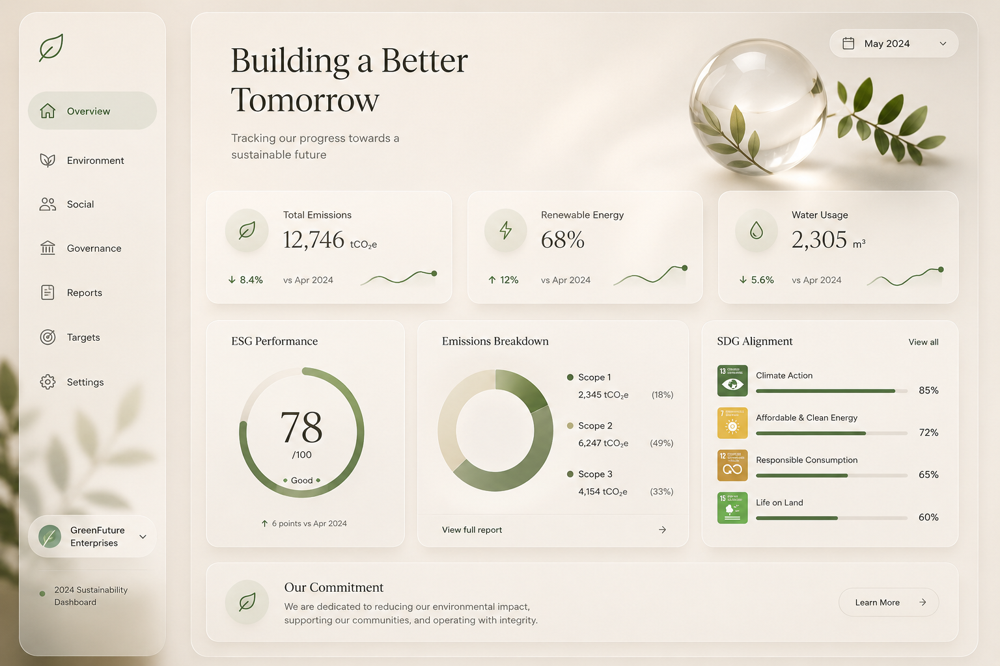

Thời Trang Tốt Hơn.
Rác Thải Ít Hơn.
Một kỷ nguyên mới của thời trang tuần hoàn, nơi mỗi món đồ cũ được tái sinh và tiếp tục hành trình xanh. Chúng tôi kết nối những tâm hồn yêu môi trường bằng phong cách thời trang có trách nhiệm.
Khám Phá Câu Chuyện
Gánh Nặng Vô Hình Từ Tủ Đồ
Mỗi giây trôi qua, một xe tải đầy quần áo bị chôn lấp hoặc thiêu hủy trên toàn cầu. Hàng triệu tấn sợi tổng hợp khó phân hủy đang đè nặng lên các hệ sinh thái tự nhiên. ReFashion ra đời với quyết tâm thay đổi thực trạng đó ngay từ hôm nay.
Mỗi Tấm Vải Cũ Không Phải Rác Thải
Chúng tôi tin rằng mọi thớ vải đã qua sử dụng đều chứa đựng sợi dây liên kết của sự sáng tạo và câu chuyện cuộc sống để viết tiếp. Dưới bàn tay nghệ thuật của các nhà thiết kế Upcycling tại ReFashion, những chiếc quần jeans rách, những tấm kaki cũ kỹ được làm sạch, xử lý và thiết kế lại thành những món đồ thời trang cao cấp, mang đậm dấu ấn nghệ thuật thủ công độc bản.



Hành Trình Tuần Hoàn Của Sợi Vải
Chu trình 5 bước khép kín — tối đa vòng đời sản phẩm, giảm thiểu nước sạch và khí thải CO₂.



Nơi Giao Lưu & Kết Nối Gen Z
ReFashion không chỉ là một trang thương mại điện tử đơn thuần, chúng tôi xây dựng một điểm đến, một không gian tương tác năng động để những bạn trẻ thế hệ mới (Gen Z) chia sẻ niềm đam mê, tự do mua bán, ký gửi, quyên quyên góp quần áo cũ, cùng nhau định hình và lan tỏa xu hướng sống thân thiện với hành tinh.
Tích Lũy Điểm Xanh - GreenCoin
GreenCoin là hạt nhân liên kết cộng đồng sống xanh của ReFashion. Bằng cách thực hiện các hoạt động bảo vệ môi trường như đóng góp đồ cũ, mua sản phẩm tái sinh, viết đánh giá minh bạch, hệ thống sẽ tự động thưởng điểm sinh thái. Điểm tích lũy này có thể dùng để quy đổi mã giảm giá hoặc gửi quyên góp đóng góp cho các quỹ trồng rừng ngập mặn Việt Nam.
Hội Ngộ Các Nhà Thiết Kế Xanh
Chúng tôi đồng hành cùng hệ sinh thái đa dạng: nhà thiết kế bền vững, sinh viên mỹ thuật, nghệ nhân thủ công và đại sứ môi trường — biến kinh tế tuần hoàn thành hành động thực tế.
Hành Động Nhỏ, Tác Động Lớn
Từ chối thời trang nhanh, chọn thời trang tuần hoàn — mỗi lựa chọn của bạn là bảo vệ nguồn nước và bầu không khí Trái Đất.
